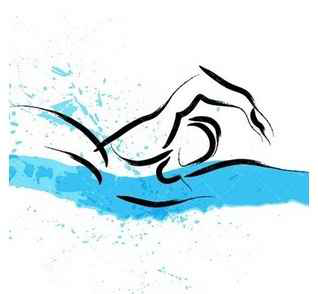

Sport
Taekwondo
Taekwondo is een vorm van zelfverdediging. Letterlijk vertaald betekent tae voet,
kwon hand of vuist en do de manier of de weg. Taekwondo is dus het gebruik van de
hand en de voet, met als doel zelfverdediging en het verbeteren van je persoonlijkheid
en het wordt dus ook vaak gezien als een verdedigingssport en niet als een vechtsport
omdat er veel aandacht gaat naar zelfbeheersing en respect.Voor de serieuze taekwondo
is het niet alleen het gebruik van de hand en de voet, maar een manier van denken,
een manier van zelfdiscipline en ontwikkeling van zelfvertrouwen. Door training ontwikkelt
een student zelfvertrouwen, discipline, lichamelijke gezondheid, coördinatie en
zelfverdediging.Taekwondo wordt gezien als een kunst van zelfverdediging, die
gebruikt kan worden voor gerechtigheid en het verdedigen van de zwakkere. Het is een
kunst die niet alleen is weggelegd voor sterke mensen, maar die door iedereen te beoefenen
is. Op 11 april 1955 was er voor het eerst sprake van de naam Taekwondo.
-
Beverwijkse Voetbalvereniging De Kennemers
De Beverwijkse voetbalvereniging De Kennemers ( B.V.V. De Kennemers )
werd opgericht op 28 december 1918 en is daarmee de oudste
voetbalvereniging uit de regio. De clubkleuren zijn rood en zwart.
De vereniging heeft momenteel zowel een zaterdag- als zondagafdeling.
Op zaterdag spelen de jeugdteams, een senioren team en is er ook voor
senioren "vriendenvoetbal". Op zondag spelen de senioren teams (zowel
mannen als vrouwen).
-
Kennemer Zwemclub

De Kennemer Zwem Club is opgericht in 1953 en heeft haar clubhuis
"De Drijver" vlak naast het Sportfondsenbad in Beverwijk. Bij de
vereniging kunnen kinderen leren zwemmen maar daarna ook deelnemen
aan wedstrijdzwemmen en waterpolo. KZC heeft een 50 meter bad ter
beschikking, een uniek bad voor wedstrijdzwemmen en waterpolo. Buiten
de wedstrijden worden er vele activiteiten ontwikkeld door de
vrijwilligers, van klaverjasavonden, de film-patat-disco middag, het
jaarlijkse trainingskamp tot de jaarlijkse feestavond waar onze
kampioenen worden gehuldigd.
-
Tafeltennisvereniging Rapidity
Tafeltennisvereniging Rapidity werd opgericht in 4 december 1940
in Beverwijk.Ze hebben dus meer dan 75 jaar ervaring in
taffeltennisen. Het is een van de oudste club in Nederland.
Ze organisiren heel veel activiteiten wat betreft tafeltennissen,
zowel
-
Basketbalvereniging Mapleleaves Heemskerk
In 1988 is de vereniging ontstaan in Heemskerk. Een aantal Dames
zijn begonnen met basketballen in competitieverband. Al gauw kwam
daar een Herenteam bij en spoedig kwam ook de jeugd zich aanmelden.
In het jaar 1996 nam een nieuw bestuur het roer inhanden. In 1996 telde
de vereniging slechts 45 leden, nu zitten we op ongeveer 130 leden.
De vereniging is voor het grootste deel opgebouwd uit jeugd. Binnen
de vereniging zijn er ook een aantal seniorenteams actief, waarin
al jaren veel oudgedienden spelen, die van jongs af aan lid zijn
van Mapleleaves.
-
Tae Kwondo club VersuZ
Tae Kwon-Do is een veelzijdige staande zelfverdedigingsport, waarbij
er geen tot nauwelijks contact wordt gemaakt. Je kunt in ieder geval
lekker je energie kwijt.Tae Kwon-Do is een staande zelfverdedigingsport
en bestaat uit verschillende onderdelen en dat maakt de sport bijzonder
afwisselend. De sport onderscheidt zich ook doordat het een staande
vorm van zelfverdediging is en dat de nadruk op het benenwerk ligt.
Hoofdtrainer Peter Stet leert het je graag!
-
Biljartvereniging Onder Ons 67
Onder Ons is de biljartvereniging in het district duinstreek waar dames
/heren/jongens/meisjes/jong of oud kunnen biljarten. Of dit nu recreatief
is op de dinsdag en/of donderdagmiddag of op (semi) compitatief op een van
onze clubavonden.
-
IJsclub "Kees Jongert"
IJsclub Kees Jongert is met circa 315 leden dé ijsclub voor de IJmond.
Je kunt bij ons schaatsen in wedstrijdverband of gewoon recreatief.
In winter- en zomermaanden geven we conditietraining, we organiseren
een cursus schoolschaatsen, we houden de Kees Jongert Bokaal en organiseren
het hele jaar door activiteiten zoals fietstochten, mountainbiketochten en
een prestatieloop over 10 km.
-
Heemskerkse Tennisvereniging Assumburg
De Heemskerkse Tennisvereniging Assumburg (HTVA) is opgericht op
22 november 1976. Het park, dat als één van de mooiste in de
omgeving geldt, is 1 april 1977 in gebruik genomen en bestaat uit
8 verlichte gravelbanen. De HTV Assumburg is aangesloten bij de
KNLTB. Ieder lid van Assumburg is ook lid van de KNLTB.
-
Elza Boules
Elza-Boules is opgericht op 1 januari 1987. Wij zijn een gezellige,
sportieve petanque vereniging. Van jong tot oud, iedereen is welkom
om bij ons te komen kijken, mee te komen spelen en lid te worden
van onze vereniging.
-
Heemskerkse Handbal Vereniging Door Samenwerking Sterk
Bij DSS kan zowel prestatiegericht als recreatief handbal worden
gespeeld. De A- en B-jeugd spelen respectievelijk in de topklasse
en jeugddivisie, het hoogste wat er in de jeugd behaald kan worden.